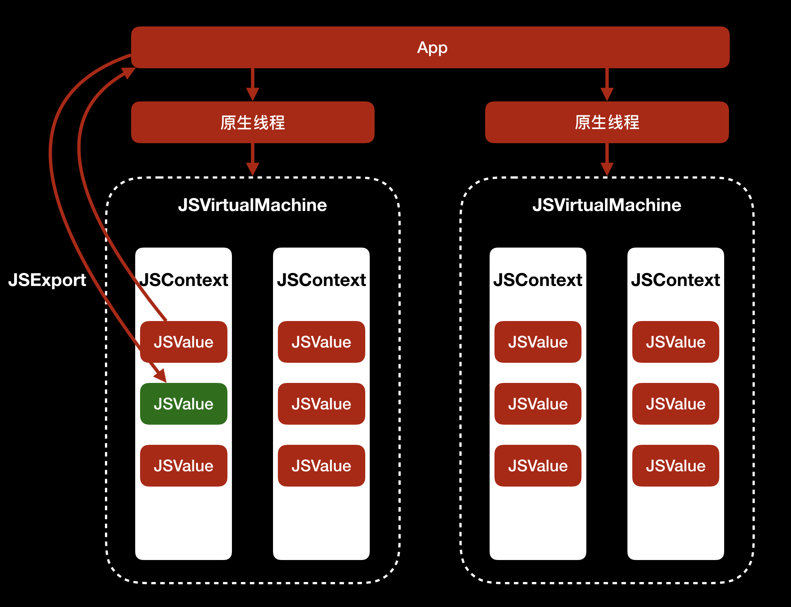

- 00 开篇词 锚定一个点，然后在这个点上深耕.md.html
- 01 建立你自己的iOS开发知识体系.md.html
- 02 App 启动速度怎么做优化与监控？.md.html
- 03 Auto Layout 是怎么进行自动布局的，性能如何？.md.html
- 04 项目大了人员多了，架构怎么设计更合理？.md.html
- 05 链接器：符号是怎么绑定到地址上的？.md.html
- 06 App 如何通过注入动态库的方式实现极速编译调试？.md.html
- 07 Clang、Infer 和 OCLint ，我们应该使用谁来做静态分析？.md.html
- 08 如何利用 Clang 为 App 提质？.md.html
- 09 无侵入的埋点方案如何实现？.md.html
- 10 包大小：如何从资源和代码层面实现全方位瘦身？.md.html
- 11 热点问题答疑（一）：基础模块问题答疑.md.html
- 12 iOS 崩溃千奇百怪，如何全面监控？.md.html
- 13 如何利用 RunLoop 原理去监控卡顿？.md.html
- 14 临近 OOM，如何获取详细内存分配信息，分析内存问题？.md.html
- 15 日志监控：怎样获取 App 中的全量日志？.md.html
- 16 性能监控：衡量 App 质量的那把尺.md.html
- 17 远超你想象的多线程的那些坑.md.html
- 18 怎么减少 App 电量消耗？.md.html
- 19 热点问题答疑（二）：基础模块问题答疑.md.html
- 20 iOS开发的最佳学习路径是什么？.md.html
- 21 除了 Cocoa，iOS还可以用哪些 GUI 框架开发？.md.html
- 22 细说 iOS 响应式框架变迁，哪些思想可以为我所用？.md.html
- 23 如何构造酷炫的物理效果和过场动画效果？.md.html
- 24 A_B 测试：验证决策效果的利器.md.html
- 25 怎样构建底层的发布和订阅事件总线？.md.html
- 26 如何提高 JSON 解析的性能？.md.html
- 27 如何用 Flexbox 思路开发？跟自动布局比，Flexbox 好在哪？.md.html
- 28 怎么应对各种富文本表现需求？.md.html
- 29 如何在 iOS 中进行面向测试驱动开发和面向行为驱动开发？.md.html
- 30 如何制定一套适合自己团队的 iOS 编码规范？.md.html
- 31 iOS 开发学习资料和书单推荐.md.html
- 32 热点问题答疑（三）.md.html
- 33 iOS 系统内核 XNU：App 如何加载？.md.html
- 34 iOS 黑魔法 Runtime Method Swizzling 背后的原理.md.html
- 35 libffi：动态调用和定义 C 函数.md.html
- 36 iOS 是怎么管理内存的？.md.html
- 37 如何编写 Clang 插件？.md.html
- 38 热点问题答疑（四）.md.html
- 39 打通前端与原生的桥梁：JavaScriptCore 能干哪些事情？.md.html
- 40 React Native、Flutter 等，这些跨端方案怎么选？.md.html
- 41 原生布局转到前端布局，开发思路有哪些转变？.md.html
- 42 iOS原生、大前端和Flutter分别是怎么渲染的？.md.html
- 43 剖析使 App 具有动态化和热更新能力的方案.md.html
- 用户故事 我是如何学习这个专栏的？.md.html
- 结束语 慢几步，深几度.md.html
- 捐赠
39 打通前端与原生的桥梁：JavaScriptCore 能干哪些事情？
你好，我是戴铭。
今天这篇文章是原生与前端共舞模块的第一篇，我来跟你聊聊前端和原生之间的桥梁 JavaScriptCore，看看它是什么、能做哪些事儿。
总结来说，JavaScriptCore 为原生编程语言 Objective-C、Swift 提供调用 JavaScript 程序的动态能力，还能为 JavaScript 提供原生能力来弥补前端所缺能力。
正是因为JavaScriptCore的这种桥梁作用，所以出现了很多使用 JavaScriptCore 开发 App 的框架 ，比如React Native、Weex、小程序、WebView Hybird等框架。
接下来，我们再回过头来看看，JavaScriptCore 的来头是啥，为什么这些框架不约而同地都要用 JavaScriptCore 引擎来作为前端和原生的桥梁呢？
要回答这个问题的话，你还需要了解JavaScriptCore 的背景。
JavaScriptCore，原本是 WebKit中用来解释执行 JavaScript 代码的核心引擎。解释执行 JavaScript 代码的引擎自 JavaScript 诞生起就有，不断演进，一直发展到现在，如今苹果公司有 JavaScriptCore 引擎、谷歌有 V8 引擎、Mozilla 有 SpiderMonkey。对于 iOS 开发者来说，你只要深入理解苹果公司的 JavaScriptCore 框架就可以了。
iOS7 之前，苹果公司没有开放 JavaScriptCore 引擎。如果你想使用 JavaScriptCore 的话，需要手动地从开源WebKit 中编译出来，其接口都是 C 语言，这对于iOS开发者来说非常不友好。
但是从iOS7开始，苹果公司开始将 JavaScriptCore 框架引入 iOS 系统，并将其作为系统级的框架提供给开发者使用。这时，接口使用 Objective-C 进行包装，这对于原生 Objective-C 开发者来说，体验上就非常友好了。
JavaScriptCore 框架的框架名是 JavaScriptCore.framework。由于苹果公司的系统已经内置了JavaScriptCore 框架，而且性能不逊色于 V8 和 SpiderMonkey 等其他引擎，所以前端开发 App 框架就都不约而同将 JavaScriptCore 框架作为自己和原生的桥梁。
接下来，我就和你详细分析一下JavaScriptCore框架的原理。
JavaScriptCore 框架
苹果官方对JavaScriptCore框架的说明，你可以点击这个链接查看。从结构上看，JavaScriptCore 框架主要由 JSVirtualMachine 、JSContext、JSValue类组成。
JSVirturalMachine的作用，是为 JavaScript 代码的运行提供一个虚拟机环境。在同一时间内，JSVirtualMachine只能执行一个线程。如果想要多个线程执行任务，你可以创建多个 JSVirtualMachine。每个 JSVirtualMachine 都有自己的 GC（Garbage Collector，垃圾回收器），以便进行内存管理，所以多个 JSVirtualMachine 之间的对象无法传递。
JSContext 是 JavaScript 运行环境的上下文，负责原生和 JavaScript 的数据传递。
JSValue 是 JavaScript 的值对象，用来记录 JavaScript 的原始值，并提供进行原生值对象转换的接口方法。
JSVirtualMachine、JSContext、JSValue 之间的关系，如下图所示：
可以看出，JSVirtualMachine 里包含了多个 JSContext， 同一个JSContext 中又可以有多个 JSValue。
JSVirtualMachine 、JSContext、JSValue 类提供的接口，能够让原生应用执行 JavaScript 代码，访问 JavaScript 变量，访问和执行 JavaScript 函数；也能够让 JavaScript 执行原生代码，使用原生输出的类。
那么，解释执行 JavaScript 代码的 JavaScriptCore 和原生应用是怎么交互的呢？
要理解这个问题，我们先来看看下面这张图：

可以看到，每个 JavaScriptCore 中的 JSVirtualMachine 对应着一个原生线程，同一个 JSVirtualMachine 中可以使用 JSValue 与原生线程通信，遵循的是JSExport协议：原生线程可以将类方法和属性提供给 JavaScriptCore 使用，JavaScriptCore 可以将JSValue提供给原生线程使用。
JavaScriptCore 和原生应用要想交互，首先要有 JSContext。JSContext 直接使用 init 初始化，会默认使用系统创建的 JSVirtualMachine。如果 JSContext 要自己指定使用哪个 JSVirtualMachine，可以使用 initWithVirtualMachine 方法来指定，代码如下：
// 创建 JSVirtualMachine 对象 jsvm
JSVirtualMachine *jsvm = [[JSVirtualMachine alloc] init];
// 使用 jsvm 的 JSContext 对象 ct
JSContext *ct = [[JSContext alloc] initWithVirtualMachine:jsvm];
如上面代码所示，首先初始化一个 JSVirtualMachine 对象 jsvm，再初始化一个使用 jsvm 的 JSContext 对象 ct。
下面我再举一个通过JavaScriptCore在原生代码中调用JavaScript变量的例子。
这里有一段 JavaScript 代码，我定义了一个 JavaScript 变量 i ，然后我们一起看看如何通过 JavaScriptCore 在原生中调用变量i。代码如下：
JSContext *context = [[JSContext alloc] init];
// 解析执行 JavaScript 脚本
[context evaluateScript:@"var i = 4 + 8"];
// 转换 i 变量为原生对象
NSNumber *number = [context[@"i"] toNumber];
NSLog(@"var i is %@, number is %@",context[@"i"], number);
上面代码中，JSContext 会调用 evaluateScript 方法，返回 JSValue 对象。
JSValue 类提供了一组将 JavaScript 对象值类型转成原生类型的接口，你可以点击这个链接，查看官方文档中对 JSValue 接口的详细说明。
其中，有3个转换类型的接口比较常用，我来和你稍作展开：
- 在这个示例中，我们使用的是 toNumber 方法，来将 JavaScript 值转换成 NSNumber 对象。
- 如果 JavaScript 代码中的变量是数组对象，可以使用 toArray方法将其转换成 NSArray对象。
- 如果变量是 Object类型，可以使用 toDictionary方法将其转换成 NSDictionary。
如果你想在原生代码中使用JavaScript 中的函数对象，可以通过 callWithArguments 方法传入参数，然后实现它的调用。使用示例如下：
// 解析执行 JavaScript 脚本
[context evaluateScript:@"function addition(x, y) { return x + y}"];
// 获得 addition 函数
JSValue *addition = context[@"addition"];
// 传入参数执行 addition 函数
JSValue *resultValue = [addition callWithArguments:@[@(4), @(8)]];
// 将 addition 函数执行的结果转成原生 NSNumber 来使用。
NSLog(@"function is %@; reslutValue is %@",addition, [resultValue toNumber]);
如上面代码所示：首先，JSContext 通过 evaluateScript 方法获取 JavaScript 代码中 addition 函数，并保存为一个 JSValue 对象；然后，通过 JSValue 的 callWithArguments 方法，传入 addition 函数所需参数 x、y 以执行函数。
而如果要在原生代码中调用JavaScript 全局函数，你需要使用 JSValue 的 invokeMethod:withArguments 方法。比如，Weex框架就是使用这个方法，来获取 JavaScript 函数的。
相关代码路径是 incubator-weex/ios/sdk/WeexSDK/Sources/Bridge/WXJSCoreBridge.mm ，核心代码如下：
- (JSValue *)callJSMethod:(NSString *)method args:(NSArray *)args {
WXLogDebug(@"Calling JS... method:%@, args:%@", method, args);
return [[_jsContext globalObject] invokeMethod:method withArguments:args];
}
可以看到，JSContext 中有一个 globalObject 属性。globalObject 是 JSValue 类型，里面记录了 JSContext 的全局对象，使用 globalObject 执行的 JavaScript 函数能够使用全局 JavaScript 对象。因此，通过 globalObject 执行 invokeMethod:withArguments 方法就能够去使用全局 JavaScript 对象了。
通过上面的分析，我们可以知道，通过 evaluateScript 方法，就能够在原生代码中执行 JavaScript 脚本，并使用 JavaScript 的值对象和函数对象。那么，JavaScript又是如何调用原生代码呢？
我先给出一段代码示例，你可以思考一下是如何实现的：
// 在 JSContext 中使用原生 Block 设置一个减法 subtraction 函数
context[@"subtraction"] = ^(int x, int y) {
return x - y;
};
// 在同一个 JSContext 里用 JavaScript 代码来调用原生 subtraction 函数
JSValue *subValue = [context evaluateScript:@"subtraction(4,8);"];
NSLog(@"substraction(4,8) is %@",[subValue toNumber]);
可以看出，JavaScript 调用原生代码的方式，就是：
- 首先，在 JSContext 中使用原生 Block 设置一个减法函数subtraction；
- 然后，在同一个 JSContext 里用 JavaScript 代码来调用原生 subtraction 函数。
除了 Block外，我们还可以通过 JSExport 协议来实现在JavaScript中调用原生代码，也就是原生代码中让遵循JSExport协议的类，能够供 JavaScript 使用。Weex 框架里，就有个遵循了 JSExport 协议的WXPolyfillSet 类，使得JavaScript 也能够使用原生代码中的 NSMutableSet 类型。
WXPolyfillSet 的头文件代码路径是 incubator-weex/ios/sdk/WeexSDK/Sources/Bridge/WXPolyfillSet.h ，内容如下：
@protocol WXPolyfillSetJSExports <JSExport>
// JavaScript 可以使用的方法
+ (instancetype)create;
- (BOOL)has:(id)value;
- (NSUInteger)size;
- (void)add:(id)value;
- (BOOL)delete:(id)value;
- (void)clear;
@end
// WXPolyfillSet 遵循 JSExport 协议
@interface WXPolyfillSet : NSObject <WXPolyfillSetJSExports>
@end
可以看到，WXPolyfillSet 通过 JSExport 协议，提供了一系列方法给 JavaScript 使用。
现在我们已经理解了原生和 JavaScript 的互通方式，知道了它们的互通依赖于虚拟机环境JSVirtualMachine。接下来，我们需要对JavaScriptCore引擎进行更深入地理解，才能更好地用好这个框架。比如，JavaScriptCore 是怎么通过直接使用缓存 JIT 编译的机器码来提高性能的，又是怎么对部分函数进行针对性测试编译优化的。
JSVirtualMachine 是一个抽象的 JavaScript 虚拟机，是提供给开发者进行开发的，而其核心的 JavaScriptCore 引擎则是一个真实的虚拟机，包含了虚拟机都有的解释器和运行时部分。其中，解释器主要用来将高级的脚本语言编译成字节码，运行时主要用来管理运行时的内存空间。当内存出现问题，需要调试内存问题时，你可以使用 JavaScriptCore 里的 Web Inspector，或者通过手动触发 Full GC 的方式来排查内存问题。
接下来，我跟你说下 JavaScriptCore 引擎内部的组成。
JavaScriptCore 引擎的组成
JavaScriptCore内部是由 Parser、Interpreter、Compiler、GC 等部分组成，其中 Compiler 负责把字节码翻译成机器码，并进行优化。你可以点击这个链接，来查看WebKit 官方对JavaScriptCore 引擎的介绍。
JavaScriptCore 解释执行 JavaScript 代码的流程，可以分为两步。
第一步，由 Parser 进行词法分析、语法分析，生成字节码。
第二步，由 Interpreter 进行解释执行，解释执行的过程是先由 LLInt（Low Level Interpreter）来执行 Parser 生成的字节码，JavaScriptCore 会对运行频次高的函数或者循环进行优化。优化器有 Baseline JIT、DFG JIT、FTL JIT。对于多优化层级切换， JavaScriptCore 使用 OSR（On Stack Replacement）来管理。
如果你想更深入地理解JavaScriptCore 引擎的内容，可以参考我以前的一篇博文“深入剖析 JavaScriptCore”。
小结
今天这篇文章，我主要和你分享的是 iOS 中 JavaScriptCore 能干的事情。
总结来说，JavaScriptCore 提供了前端与原生相互调用的接口，接口层上主要用的是 JSContext 和 JSValue 这两个类，通过 JSValue 的 evaluateScript 方法、Block 赋值 context、JSExport 协议导出来达到互通的效果。
前端的优势在于快速编写UI，原生的优势在于对平台特性的天然支持，现在我们有了能够打通前端和原生的武器，就可以充分利用二者的优势，互为补充地去做更多、更有意思的事儿。而你，也可以充分发挥自己的想象力，去实现更有意思的App。
课后作业
如果原生方法没有遵循 JSExport 协议，也没有使用 Block 方式设置给 JSContext，那还有没有其他办法可以在JavaScript中调用原生代码呢？
感谢你的收听，欢迎你在评论区给我留言分享你的观点，也欢迎把它分享给更多的朋友一起阅读。
© 2019 - 2023 Liangliang Lee. Powered by gin and hexo-theme-book.